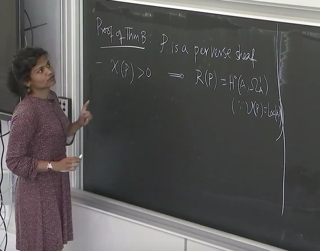

Birational geometry, Hyperkähler geometry, generic vanishing theory, Hodge modules and Hodge theory.

Mathematisch InstituutI am a tenured assistant professor (UD) at the Mathematical Institute of the University of Leiden. My official website is here. Before this, I was a Postdoc/associate member at the Hausdorff Center for Mathematics and the University of Bonn working in the complex geometry group of Prof. Daniel Huybrechts. Here is my CV.
Birational geometry, Hyperkähler geometry, generic vanishing theory, Hodge modules and Hodge theory.
Other notes
Céline Fietz; PhD candidate, University of Leiden; Dec 2023 --, coadivsor: Evgeny Shinder
Jorge Macein Sanz; masters, University of Leiden, April 2025 -- coadivsor: Emma Brakkee
Céline Fietz; masters, University of Bonn; Oct 2022 - Oct 2023. Thesis. coadivsor: Evgeny Shinder.
Lucio Verrijzer; Bachelor Thesis, University of Leiden; Feb - June, 2024